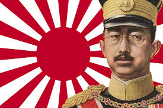
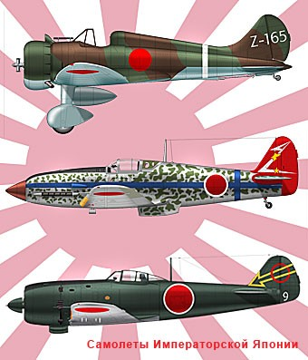
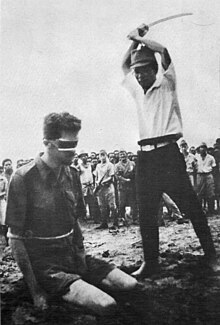

Інцидент на мосту Луґоуцяо (неподалік від Пекіна) 7 липня 1937 року став початком другої японсько-китайської війни. Після серії провальних переговорів між Республікою Китай та Японською імперією, 26 липня 1937 року Японія почала повномасштабні бойові дії. 8 серпня — 8 листопада відбулась Друга шанхайська битва, під час якої численні японські десанти у складі 3-го експедиційного корпусу Мацуі Іване, за інтенсивної підтримки з моря та повітря, захопили місто, попри сильний опір китайців. 13 грудня захоплено Нанкін, уряд евакуювався у місто Ханькоу. Японська армія 5 днів вирізала в місті цивільне населення, загинуло 50 тисяч осіб. Внаслідок битви за Нанкін китайська армія втратила всі танки, артилерію, авіацію та військово-морський флот. У червні — липні 1938 року китайці зупинили стратегічний наступ японців на Ханькоу через Чженчжоу, зруйнувавши греблі, що не давали розлитися річці Хуанхе. При цьому загинуло безліч японських солдатів, багато танків, вантажівок та гармат опинилося під водою або загрузло в багнюці.
З листопада 1938 року Японська імперія вирішує змінити стратегію активної боротьби стратегією виснаження. Японська імперія обмежується лише локальними операціями на фронті та переходить до посилення політичної боротьби.
У Республіці Китай японці в 1939 — 1941 роках захопили південно-східну частину країни. Республіка Китай через складну внутрішньополітичну обстановку в країні не могла чинити серйозного опору . Після капітуляції Французької республіки адміністрація Французького Індокитаю визнала вішістський уряд. Таїланд, скориставшись ослабленням Франції, виступив з територіальними претензіями на частину Французького Індокитаю. У жовтні 1940 року таїландські війська вторглися до Французького Індокитаю. Таїланду вдалося завдати кількох поразок вішістській армії. 9 травня 1941 року під тиском Японської імперії Режим Віші змушений був підписати мирний договір, за яким Таїланду відійшов Лаос і частина Камбоджі. Після втрати вішістським режимом колоній в Африці, виникла також загроза захоплення Індокитаю британцями і «Вільною Францією». Щоб не допустити цього, в червні 1941 року фашистський уряд погодився на введення в колонію японських військ. 7 грудня 1941 року Японія завдала удару американській військово-морській базі Перл-Гарбор. Під час нападу, в якому брав участь 441 літак, що базувалися на шести японських авіаносцях, потоплено і серйозно пошкоджено 8 лінкорів, 6 крейсерів і понад 300 літаків США. Таким чином, за один день знищено більшу частину лінкорів Тихоокеанського флоту США. Однак головна на той час сила флоту — авіаносне з'єднання за дивним збігом обставин було відсутнє на базі.
Крім США, цього дня війну Японії оголосили також Велика Британія, Нідерланди (уряд в еміграції), Канада, Австралія, Нова Зеландія, Південно-Африканський Союз, Куба, Коста-Рика, Домініканська Республіка, Сальвадор, Гондурас та Венесуела. 11 грудня Третій Рейх та Королівство Італія, а 13 грудня — Румунське королівство, Угорське королівство та Болгарське царство — оголосили війну США.
8 грудня японці блокували британську військову базу в Гонконзі і почали вторгнення в Таїланд, британську Малайю та американські Філіппіни. Британська ескадра зазнає ударів з повітря, і два лінкори — ударна сила британців у цьому районі Тихого океану — йдуть на дно.
Таїланд після нетривалого опору погодився на військовий союз з Японською імперією і оголосив війну США та Великій Британії. Японська авіація з території Таїланду почала бомбардування Бірми.
10 грудня японці захопили американську базу на острові Гуам, 23 грудня — базу на острові Вейк, 25 грудня захоплено Гонконг. 8 грудня японці проривають британську оборону в Малайї і, стрімко наступаючи, відтісняють британські війська в Сінгапур. Японці захопили Малайю за 54 дні. Швидкий розгром британських військ не дозволив британському командуванню підвезти в Сінгапур додаткові сили для створення потужної оборони міста. Втрати британських і австралійських військ під час операції склали 5,5 тис. убитих, 5 тис. поранених і 40 тис. полонених. Японські втрати склали 1,8 тис. убитих і 3,4 тис. поранених. Сингапур захоплено 15 лютого 1942 року, після 6-денної облоги. Близько 80 тис. британських і австралійських солдатів потрапило в полон.
Падіння Сінгапуру стало подією стратегічного значення. Після цього японський наступ пішов розбіжними напрямками, і японці швидко захопили Бірму і Голландську Ост-Індію, наблизившись до Британської Індії та Австралії. Ще більшими виявились моральні збитки від падіння Сінгапуру. Сінгапур був символом могутності Заходу в Південно-Східній Азії. Після Першої світової війни створенню великої військово-морської бази в Сінгапурі надавалося таке велике значення, що її символічна важливість стала перевершувати навіть її стратегічну цінність. Легкість, з якою японці її захопили, завдала нищівного удару по престижу Великої Британії (і Європи загалом) в Азії. Розвіявся міф про «непереможність білої людини». На Філіппінах в кінці грудня 1941 року японці захопили острови Мінданао та Лусон. Залишкам американських військ вдалось закріпитися на півострові Батаан та острові Коррехідор.
11 січня 1942 року японські війська вторглись до Голландської Ост-Індії і невдовзі захопили острови Борнео та Целебс. 27 лютого японський флот переміг британсько-голландську ескадру в Яванському морі. Союзники намагались створити потужну оборону на острові Ява, однак до 2 березня капітулювали.
23 січня 1942 року японці захопили архіпелаг Бісмарка, в тому числі острів Нова Британія, а потім опанували західною частиною Соломонових островів, в лютому — острови Гілберта, і на початку березня вторглись у Нову Гвінею. На Філіппінах 9 січня почалась битва за Батаан — японська армія під командуванням генерал-лейтенанта Масахару Хомма атакувала східний фланг лінії Абукай-Маубан. Союзники залишили лінію Абукай-Маубан 22 січня і зайняли оборону на лінії Оріон-Багак. Японці кілька разів намагалися прорвати цю лінію і висадити десант на півдні півострова, але ці атаки були відбиті. 8 лютого генерал-лейтенант Хомма наказав призупинити бойові дії для перегрупування військ. Японські війська страждали від тропічних хвороб і не пробували прорвати оборону союзників до початку квітня. 12 березня генерал Макартур покинув зону бойових дій. 3 квітня, після артилерійської підготовки і бомбардування, японці прорвали лінію Оріон-Багак. 8 квітня генерал-майор Едвард Кінг надіслав пропозицію про капітуляцію, а наступного дня армія союзників здалася.
8 березня, наступаючи в Бірмі, японці захопили Янгон, в кінці квітня — Мандалай, до травня опанували майже всю Бірму, завдавши поразки британським і китайським військам і відрізавши південний Китай від Британської Індії. Проте початок сезону дощів і нестача сил не дозволили японцям розвинути свій успіх та увійти в Індію. 6 травня капітулювало останнє угруповання американських і філіппінських військ на Філіппінах. До кінця травня 1942 року Японська імперія з незначними втратами встановила контроль над Південно-Східною Азією і Північно-Західною Океанією. Американські, британські, голландські та австралійські війська зазнали нищівної поразки, втративши всі свої основні сили в цьому регіоні.
У червні 1942 року відбулася Битва біля атолу Мідвей — великий морський бій в Тихому океані. Перемога флоту США над Об'єднаним флотом Японії стала поворотною точкою у війні на Тихому океані. Японський флот, що втратив 4 важкі авіаносці, 250 літаків та найкращих пілотів, назавжди втратив можливість ефективно діяти поза зонами прикриття берегової авіації. Японія перейшла до оборони (доти вона захопила величезні території у Тихому океані та в Азії — 3,8 млн км².).
Кампанія на Соломонових островах була однією з основних кампаній в Тихоокеанському театрі військових дій під час Другої світової війни.
Кампанія розпочалася з висадки японського десанту та окупації значних територій Британських Соломонових Островів та острова Бугенвіль протягом перших шести місяців 1942 року.
Союзники, оберігаючи свої комунікації та лінії постачань в південній частині Тихого океану, організували контрнаступ у Новій Гвінеї, ізолювали японську базу в Рабаулі та контратакували японців 8 серпня 1942 року на Соломонових островах. Контрнаступ розпочався з висадки в Гуадалканалі і на малих прилеглих островах. Ці висадки потягли за собою кілька битв на суходолі і на морі між противниками, починаючи з десанту в Гуадалканалі і продовжилися кількома сутичками в центральних і північних Соломонах, на острові Нова Джорджія і його околицях, на Бугенвілі. З серпня 1942 року по лютий 1943 року японські та американські війська бились за контроль над островом Гуадалканал з архіпелагу Соломонових островів. У цій битві на виснаження зрештою перемогли США. Необхідність направляти підкріплення на Гуадалканал ослабила японські сили в Новій Гвінеї, що сприяло звільненню острова від японських військ, яке завершилось на початку 1943 року.
18-та японська армія генерала Адаті висадилась в Папуа 21—22 липня 1942, почались бої, відомі як Битва за Кокоду. Японська армія майже вийшла до Порт-Морсбі, однак проблеми під Гуадалканалом змусили командування розпочати відступ. До 23 січня 1943 року австралійці та американці очистили від японців острів, втративши 8500 осіб при дванадцятитисячних японських втратах.
11 травня 1943 року американці розпочали операцію з відвоювання острова Атту. Захисники острова не перешкоджали десантуванню, але окопалися на висотах. 29 травня захисники острова раптово атакували американські позиції у Массакра Бей. Після тривалого і запеклого бою всі японці загинули.
З червня і до кінця 1943 року союзні війська після запеклих боїв зайняли острови Гілберта, Соломонові (крім острова Бугенвіль, де бої тривали до кінця війни), західну частину острова Нова Британія та південно-східну частину Нової Гвінеї. У північній частині Тихого океану американські війська в травні-серпні 1943 року повернули Алеутські острови. 22 листопада 1943 року президент США Франклін Рузвельт, прем'єр-міністр Великої Британії Вінстон Черчилль та лідер Гоміньдану Чан Кайші зустрілися в Каїрі для обговорення подальшого ходу бойових дій.
З 1 до 23 лютого 1944 року американські війська здобули Маршаллові Острови, з 15 червня до 10 серпня — Маріанські острови та з 15 вересня до 12 жовтня — західну частину Каролінських островів. Боротьба за північну частину Нової Гвінеї тривала з січня до вересня 1944 року. В Бірмі в березні 1944 року японські війська почали наступ на індійський штат Ассам, який після 4-місячних боїв закінчився повним провалом, і союзні війська, перейшовши в контрнаступ, до кінця року зайняли більшу частину Північної Бірми. Японське командування в 1944 році вело активні дії в Республіці Китай, де японці захопили безперервну наземну комунікацію, що зв'язувала північні та південні райони Китаю.
Після завершення війни в Європі останнім противником країн антифашистської коаліції залишалася Японська імперія. До того часу війну Японії оголосили близько 60 країн. Однак, попри ситуацію, японці не збиралися капітулювати і оголосили про ведення війни до переможного кінця. У червні 1945 року японці втратили Індонезію, змушені були залишити Індокитай. 26 липня 1945 року від імені глав урядів Великої Британії, США, Республіки Китай оголошено Потсдамську декларацію 1945 р., що вимагала капітуляції Японської імперії. Японський уряд відхилив цю вимогу. 6 серпня на Хіросіму, а через три дні на Наґасакі американці скинули атомні бомби, загинуло та постраждало 250 тис. осіб, а міста виявилися майже стерті з поверхні землі. 8 серпня СРСР оголосив війну Японській імперії, розірвавши Японсько-радянський пакт про нейтралітет, а 9 серпня почав наступ. Японська армія (Квантунська) була зосереджена у Маньчжурії, Кореї, на Сахаліні, Курильських островах. Радянські війська (Забайкальський, 1-й, 2-й Далекосхідні фронти) та монгольські з'єднання розгромили Квантунську армію протягом двох тижнів. 2 вересня о 9:02 за токійським часом на борту американського лінкора «Міссурі» підписано акт про беззастережну капітуляцію Японської імперії. Найбільша війна в історії людства завершилася.